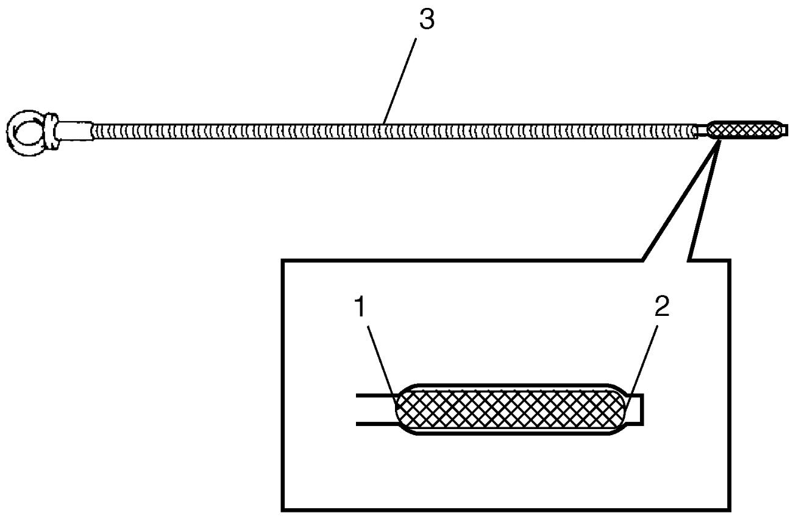
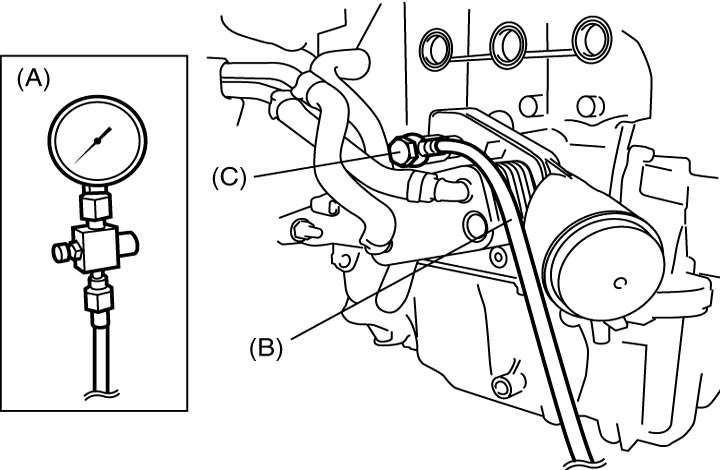

1E
| Oil Pressure Check |
1)Before checking oil pressure, check the following items.
•Oil level in oil pan
If oil level is low, add oil up to upper limit mark (1) on dipstick (3).
•Oil quality
Change oil if discolored or deteriorated. For engine oil to be used, refer to Engine Oil and Filter Change:D16AA.
•Oil leakage
If leakage is found, repair leaky point(s).

If oil level is low, add oil up to upper limit mark (1) on dipstick (3).
•Oil quality
Change oil if discolored or deteriorated. For engine oil to be used, refer to Engine Oil and Filter Change:D16AA.
•Oil leakage
If leakage is found, repair leaky point(s).

 "Expand image")
| 2. | LOW level mark |
2)Remove oil pressure switch-1. 
3)Install special tools to hole from which oil pressure switch-1 has been removed.

 "Expand image")
4)Start engine and warm it up to normal operating temperature.
NOTE:
Place gear shift lever in “Neutral”, apply parking brake and block drive wheels.
5)Measure oil pressure at specified engine speed.
NOTE:
For specified idle speed, refer to Idle Speed Inspection:D16AA.
Oil pressure specification
More than 75 kPa (0.8 kgf/cm2, 10.8 psi, 0.75 bar) at specified idle speed
300 – 450 kPa (3.1 – 4.6 kgf/cm2, 43.5 – 65.2 psi, 3.00 – 4.50 bar) at 3750 rpm
6)Stop engine, and remove oil pressure gauge and attachment.
7)Install oil pressure switch-1.
8)Start engine, and check oil pressure switch-1 for oil leakage.
If oil leakage is found, repair it.
If oil leakage is found, repair it.